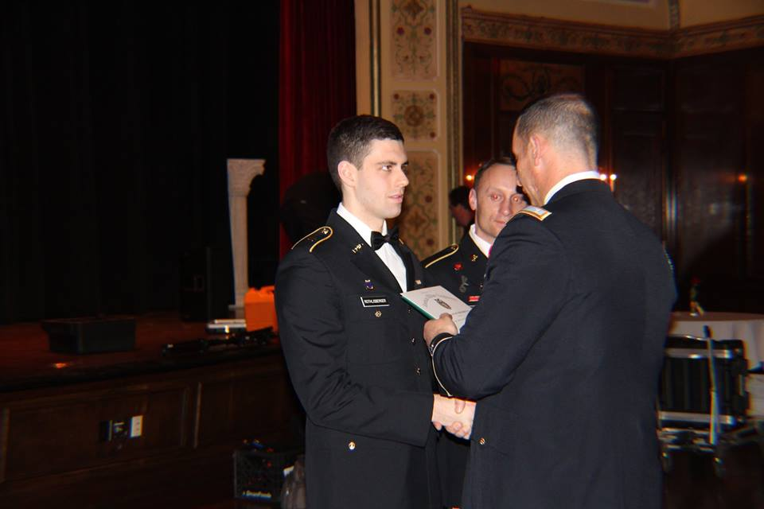
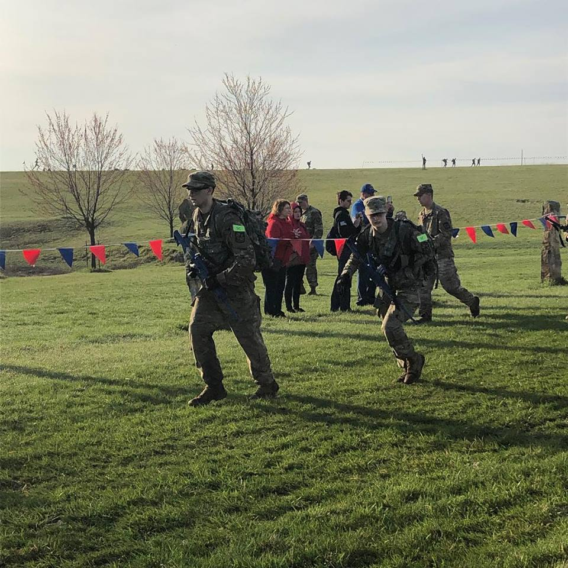
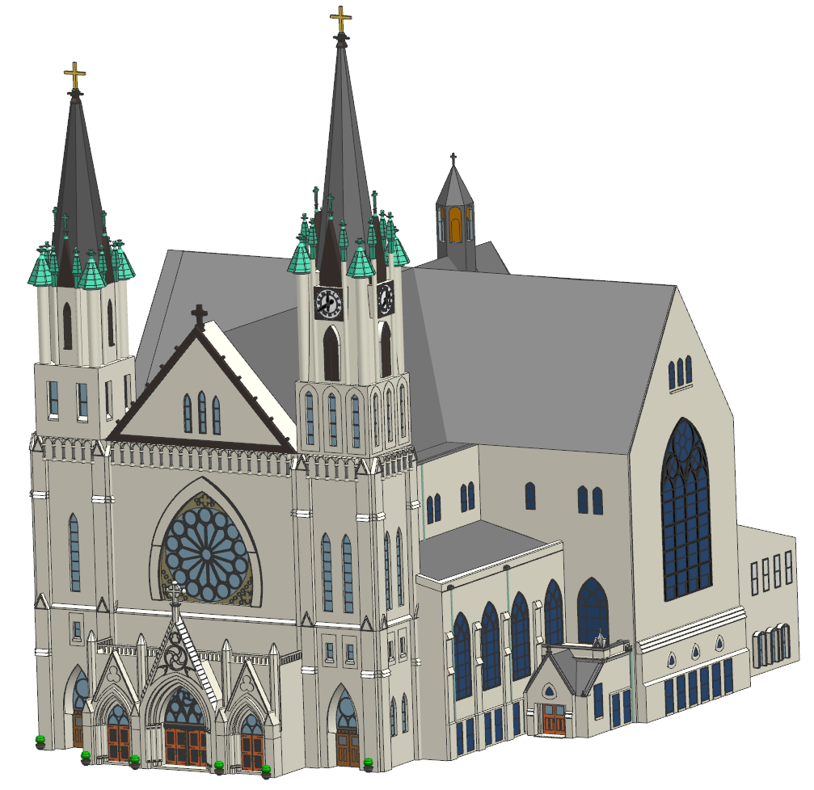
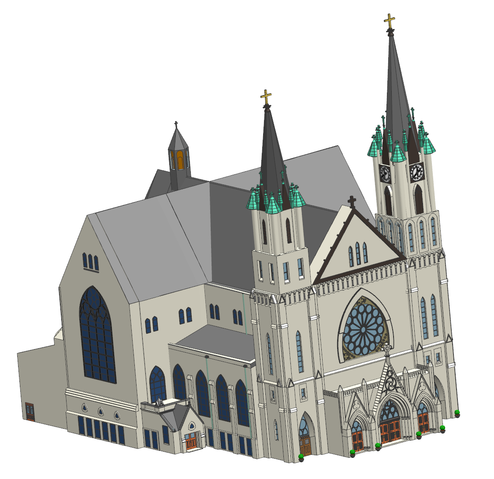

Sam Rothlisberger
Hello! My name is Sam Rothlisberger. I'm a Senior at Marquette University in Milwaukee, WI, studying Electrical Engineering. See my social media accounts below and my current resume here.


About Me


Army R.O.T.C
I am a Cadet in Marquette University R.O.T.C. I will be serving full-time in the Army Cyber Corps as a 2LT upon completion of my Undergraduate degree. Above, I am recieving an award for being the Rear Admiral Louis M Smith Scholarship Winner in the competition of 2018 (left) and competing in the Buddy Ranger competition of 2019 (right) in Lawrence, Kansas.


Engineering
I enjoy using software such as C+, Java, Matlab, LabVIEW, PLECS, and other platforms to assist in completing school and personal projects. For example, this entire website is made from scratch by myself using Brackets software. Above is a design of a cathedral on campus that I developed Freshman year with a team that I led, using NX 10.0 (CAD).

Service
I enjoy volunteering my time to help the Milwaukee community. Above is a picture of me handing out stockings at a veterans home in Wisconsin (left) and participating in the 2018 Milwaukee veterans day parade (right) to honor those who have served and are serving.Designed by Sam Rothlisberger